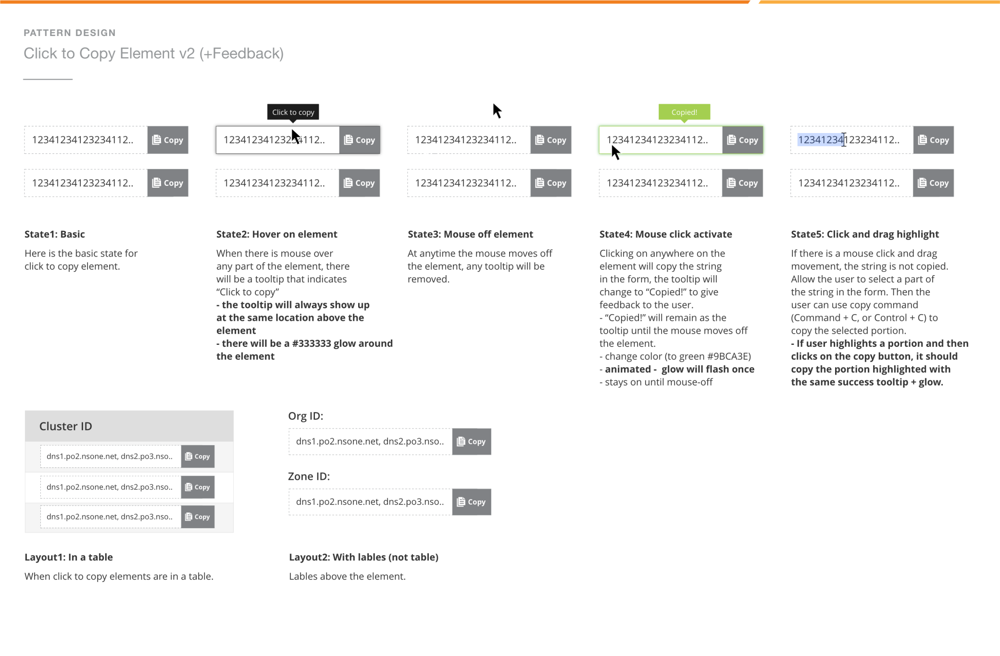

CFUI Design system v1
2016 - 2019
Joining Cloudflare in 2016, I found myself on a small design team of just two. Back then, the company relied on designs established in 2011, with an aesthetic reminiscent of the early 2000s.
A core priority, once the 2016 rebranding wrapped up, was to establish design consistency and streamline collaboration with engineers. Implementing a design system became our first step in achieving this.
01. Audit
Our initial step for the design system involved a swift audit of Cloudflare's design landscape. Initially, we'd focus on the core platform experience. The marketing design team would establish brand guidelines for the pre-login area (everything before sign-in). Everything after the sign-in, the product design team would take ownership of the "platform" design and user experience.
We looked at the contrast and readability of our text over background based on Web Content Accessibility Guidelines 2.0 at the AA level across many main pages...
...and components. We also looked at the number of background colors that were being used. We started to notice things such as 11 different grey backgrounds that varied from page to page inconsistently. It was a good wake-up call for us as designers and the front-end teams who looked to design for consistency.
Here are some results from the audit: for the top nav bar and buttons, there were already this many variations that were only slightly different and definitely single use.
02. System
This laid out the foundational research and work we put into creating Cloudflare's first design system, also known as the "CFUI".
We worked with both front-end engineers and marketing designers to simplify the colors and fonts used on the platform closely to match the styles that were used on the marketing pages.
We documented new components and component behaviors so that engineers could build them out regardless of which team they belong to with the same language, color, and styles.
More buttons and links for different uses, states, and pseudo-states.
03. Accessibility
One part of the design system that I focused my attention on a lot more was accessibility on our data visualizations. We wanted to have a structured system of colors and guidelines for how we represented data in charts and diagrams that would be easy to work with and read, regardless of how our customers' vision was.
I put time into researching colors for data visualizations, including cartographic data (check out ColorBrewers by Cynthia Brewer), and interviewed color-blind designers to better understand how colors could be used to enable all our users.
To effectively communicate insights on our platform, I explored various data visualization techniques. This involved creating mock visualizations that showcased different color schemes, ranging from monochromatic for emphasizing trends to qualitative palettes for highlighting categories. By presenting these mockups to the team, I facilitated a discussion on the most impactful way to represent data within our interface. This exploration not only helped us choose the optimal color scheme but also sparked a valuable conversation about user perception and information clarity within data visualizations.
A lot of this was build in simple front-end prototypes that allowed for rapid changes and scaling into different number of metrics.
This design system audit proved invaluable. It provided the insights needed to create and update chart and graph components within the CF-UI component library. Accessibility was a core focus, and we prioritized an accessible color set to ensure optimal usability for a wide range of users. This not only improved the user experience but also aligned with our commitment to inclusivity.